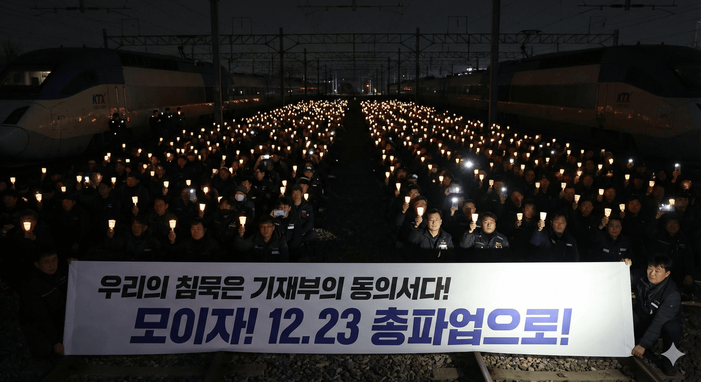

감사원 판단으로도 자율 결정 가능한 사안임에도 ‘90%’로 후퇴. 12월 23일(화) 오전 9시, 무기한 총파업으로 응답합니다.
사랑하는 고양고속차량지부 조합원 동지 여러분.
우리는 지난 12월 10일, 총파업이라는 배수진을 치고 정부와 사측을 정면으로 압박했습니다. 그리고 파업 돌입 직전, “성과급 100% 정상화”라는 약속을 믿고 파업을 유보하며 현장을 지켰습니다. 그 결정은 철도 노동자의 양보였고, 동시에 정부가 책임 있게 해결하라는 마지막 기회였습니다.
그런데 지금 돌아오는 것은 무엇입니까.
감사원 판단으로도 공운위가 자율적으로 결정할 수 있는 사안이라는 점이 확인되었음에도, 기획재정부는 “100% 정상화” 약속을 사실상 뒤로 미루고 기본급 90% 기준의 방안을 공운위에 올리려 하고 있습니다. 이는 단순한 숫자 조정이 아닙니다. 약속 파기이며, 15년 동안 철도 노동자를 ‘80% 노동자’로 묶어두었던 구조를 또 다른 숫자로 연장하려는 기만입니다.
동지 여러분. 우리는 지금 한 가지를 분명히 해야 합니다.
“100% 정상화”는 협상의 결과물이기 전에, 당연한 원칙이며 상식입니다. 100%에서 단 1%라도 모자란 안은 ‘타협’이 아니라 퇴행이고, ‘현실론’이 아니라 굴복의 전례를 남기는 위험한 선례입니다.
이번 사태에서 가장 분명한 사실은 이것입니다.
파업 유보의 전제가 되었던 ‘성과급 정상화(100%) 추진’ 약속을, 기재부가 뒤집고 있다는 점입니다.
우리는 “해결하겠다”는 약속을 믿고 멈췄습니다. 그런데 절차가 다가오자 “90%”를 들이밀며 방향을 바꾸려 합니다. 이 방식은 결국 노동조합의 결단과 현장의 신뢰를 시험하는 행위입니다. 지금 현장이 분노하는 이유도 여기에 있습니다. 많은 조합원들이 “이제 와서 90%라는 숫자를 꺼내는 것 자체가 우리를 놀리는 것처럼 느껴진다”고 말합니다. 약속을 뒤집는 순간, 숫자는 단순한 수치가 아니라 모욕이 됩니다.
기재부의 노림수는 명확합니다.
12월 10일의 파업만 우선 피해서 “큰일은 막았다”는 모양새를 만들고,
연말이 되어서야 90%안을 던져 “이 정도면 받으라”는 프레임을 씌우고,
내부 흔들림을 만들어 대오 이완을 노리는 것.
그리고 여기서 중요한 점이 하나 더 있습니다.
연말연시를 앞두고 코레일과 국토부는 이미 특별수송 대책(열차 증편·확대 운행)을 확정해 실행합니다. 기재부는 바로 그 ‘기정사실화된 특별수송 상황’을 방패로 삼아, “이제 와서 파업이 가능하겠느냐”는 분위기를 만들며 시간을 벌려는 전술을 펴고 있습니다. 증편을 결정한 주체는 기재부가 아닙니다. 그러나 기재부가 노리는 것은 분명합니다. 연말연시의 특수한 여건을 이용해 투쟁을 어렵게 만들고, 그 틈으로 약속과 다른 안을 밀어붙이는 것입니다.
중앙쟁의대책위원회는 12월 19일 긴급 확대쟁대위를 통해 상황을 공유하고 총파업을 결의했습니다. 또한 기자회견을 통해 정부의 약속 불이행을 규탄하고, 정부 입장 변화가 없다면 12월 23일 오전 9시부터 무기한 총파업에 돌입함을 선포했습니다.
우리는 더 이상 “말”로만 시간을 끌게 둘 수 없습니다.
열차를 멈추는 것은 시민을 불편하게 하자는 것이 아니라, 철도 노동자의 존엄과 안전의 기반을 지키기 위한 마지막 수단입니다. 약속이 지켜지지 않는 현장에서, 안전을 말할 자격은 누구에게도 없습니다.

일부에서는 말합니다. “90%까지 올라간 것 아니냐”, “다른 이슈도 있는데 왜 그러냐”고. 그러나 핵심을 흐리면 안 됩니다. 이번 싸움은 ‘조금 올렸는가’가 아니라 ‘약속한 정상화를 실행하는가’의 문제입니다.
그리고 철도노조는 결코 무조건을 외치지 않았습니다.
노조는 내년(2026년)부터 성과급 지급 기준은 정상화하되, 경영평가 감점(페널티) 부여는 수용 가능하다는 입장까지 밝혔습니다. 말 그대로, 기재부가 늘 꺼내드는 “경영평가 부담” 논리까지 감수하겠다고 한 것입니다.
그런데도 기재부가 100% 정상화를 거부하고 90%를 고집한다면, 결론은 하나입니다.
문제는 ‘조건’이 아니라 ‘의지’입니다. 책임은 기재부에 있습니다.
지금 현장이 분노하는 이유도 여기에 있습니다. 우리는 또다시 양보했습니다. 그런데 기재부는 그 양보를 ‘출구’로 삼지 않고, 오히려 90%라는 숫자로 약속을 축소해 버리려 합니다. 이것이 조합원들이 “뒤통수를 맞았다”고 느끼는 이유입니다.
동지 여러분, 연말연시는 파업하기가 더 어렵습니다. 그래서 저들은 이 시기를 노립니다.
가만히 있으면, 우리의 침묵을 ‘암묵적 동의’로 처리하려 들기 때문입니다.
만약 이번에 파업 없이 기재부 예상대로 흘러가 버리면, 그들은 이렇게 말할 것입니다.
“결국 받아들였다. 이제 끝이다.”
이 프레임이 굳어지는 순간, 정상화는 멀어지고 우리는 또다시 시간을 빼앗깁니다.
그래서 단 한 명도 빠져서는 안 됩니다.
참석과 참여가 곧 “우리는 결코 인정하지 않았다”는 가장 확실한 증거입니다.
솔직히 말해 최악의 경우도 있습니다. 총파업을 하더라도 기재부가 몽니를 부리며, 올해를 넘길 수도 있습니다.
그러나 그렇기 때문에 더더욱 참여가 절대적입니다.
우리가 총파업에 참여해 만들어낸 열기만큼, 우리는 저들에게 분명히 새겨 넣을 수 있습니다.
우리는 저항했다.
우리는 결코 인정하지 않았다.
우리는 100% 정상화의 원칙을 끝까지 붙들었다.
이 흔적이 남으면, 올해를 넘긴다 해도 불씨는 꺼지지 않습니다. 그 불씨가 결국 성과급 정상화를 반드시 이루어낼 다음 승리의 조건이 됩니다.
“철도노동자 총파업으로 성과급 정상화 쟁취하자!”
“철도노동자 총단결로 총파업 투쟁 승리하자!”
“약속이행 거부하는 기재부를 규탄한다!”
2025년 12월 19일
전국철도노동조합 고양고속차량지부